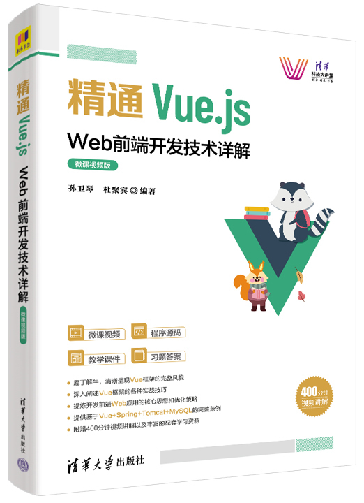

首页 > 书籍下载
《精通Vue.js：Web前端开发技术详解（微课视频版）》PDF下载（高清完整版）
|  | 作者：孙卫琴、杜聚宾 |
| 出版时间：2022年05月01日 | |
| 出版社：清华大学出版社 | |
| ISBN：9787302602903 | |
| 总页数：476 | |
| 总字数：74.6W |
这是一本介绍 Vue 框架用法的书，内容结合案例，把理论和实践紧密地结合在一起，适合所有 Web 前端开发人员阅读。
这里提供的是《精通Vue.js：Web前端开发技术详解（微课视频版）》的高清 PDF 下载，内容完整，附带目录标签。
这本书的主要内容包括：前后端分离的基本原理、MVVM设计模式、Vue的基本用法和状态管理等，Vue框架建立在 JavaScript 脚本语言的基础上。如果你已经熟悉 JavaScript 语言，会比较容易上手，如果不熟悉，也不会有很大的障碍，书中对涉及的 JavaScript 知识做了专门的解释，所以，请读者朋友们放心地跟着它来学习吧！
下面是一位读者对这本书的评价：
因为工作需要，要从头开始学习前端技术，为项目的实际开发做准备。在网上搜索了很久，好多推荐这本书，内容真的不错。
书籍目录
- 第1章 Vue简介
- 1.1 MVVM设计模式
- 1.2 Vue框架的点
- 1.3 个Vue范例
- 1.4 Vue组件的选项
- 1.5 Vue组件实例的生命周期
- 1.6 Vue编译模板和渲染DOM的基本原理
- 1.7 异步渲染DOM
- 1.8 防抖动函数debounce()
- 1.9 Vue的开发和调试工具
- 1.10 小结
- 1.11 思考题
- 第2章 Vue指令
- 2.1 内置Vue指令
- 2.2 自定义Vue指令
- 2.3 小结
- 2.4 思考题
- 第3章 计算属性和数据监听
- 3.1 计算属性
- 3.2 数据监听
- 3.3 Vue的响应式系统的基本原理
- 3.4 小结
- 3.5 思考题
- 第4章 绑定表单
- 4.1 绑定文本域
- 4.2 绑定单选按钮
- 4.3 绑定复选框
- 4.4 下拉列表
- 4.5 把对象与表单绑定
- 4.6 小结
- 4.7 思考题
- 第5章 绑定CSS样式
- 5.1 绑定class属性
- 5.2 绑定style属性
- 5.3 范例： 变换表格奇偶行的样式
- 5.4 小结
- 5.5 思考题
- 第6章 CSS过渡和动画
- 6.1 CSS过渡
- 6.2 CSS动画
- 6.3 过渡组合组件
- 6.4 动态控制过渡和动画
- 6.5 小结
- 6.6 思考题
- 第7章 Vue组件开发基础
- 7.1 注册全局组件和局部组件
- 7.2 组件的命名规则
- 7.3 向组件传递属性
- 7.4 nonprop属性
- 7.5 组件树
- 7.6 监听子组件的事件
- 7.7 综合范例： 自定义组件
- 7.8 小结
- 7.9 思考题
- 第8章 Vue组件开发高级技术
- 8.1 插槽
- 8.2 动态组件
- 8.3 异步组件
- 8.4 组件的生命周期
- 8.5 组件的混入块
- 8.6 组件之间的互相访问
- 8.7 组件的递归
- 8.8 定义组件模板的其他方式
- 8.9 组件与DOM元素的通信
- 8.10 小结
- 8.11 思考题
- 第9章 render()函数和虚拟DOM
- 9.1 render()函数
- 9.2 真实DOM
- 9.3 虚拟DOM
- 9.4 h()函数的用法
- 9.5 用render()函数实现模板的一些功能
- 9.6 在render()函数中使用JSX语法
- 9.7 综合范例： 博客帖子列表
- 9.8 小结
- 9.9 思考题
- 第10章 Vue CLI脚手架工具
- 10.1 Vue CLI简介以及安装
- 10.2 创建Vue项目
- 10.3 Vue项目的结构
- 10.4 安装和配置Visual Studio Code
- 10.5 创建单文件组件
- 10.6 创建正式产品
- 10.7 在Tomcat中发布正式产品
- 10.8 小结
- 10.9 思考题
- 第11章 Vue Router路由管理器
- 11.1 简单的路由管理
- 11.2 路由管理器的基本用法
- 11.3 在Vue项目中使用路由管理器
- 11.4 路由模式
- 11.5 动态链接
- 11.6 嵌套的路由
- 11.7 命名路由
- 11.8 命名视图
- 11.9 向路由的组件传递属性
- 11.10 编程式导航
- 11.11 导航守卫函数
- 11.12 数据抓取
- 11.13 设置页面的滚动行为
- 11.14 延迟加载路由
- 11.15 动态路由
- 11.16 小结
- 11.17 思考题
- 第12章 组合API
- 12.1 setup()函数的用法
- 12.2 分割setup()函数
- 12.3 小结
- 12.4 思考题
- 第13章 通过Axios访问服务器
- 13.1 Axios的基本用法
- 13.2 在Vue项目中使用Axios
- 13.3 Axios API的用法
- 13.4 请求配置
- 13.5 并发请求
- 13.6 请求器和响应器
- 13.7 前端与后端的会话
- 13.8 前端与后端代码的整合
- 13.9 小结
- 13.10 思考题
- 第14章 通过Vue行状态管理
- 14.1 Vuex的基本工作原理
- 14.2 Vuex的基本用法
- 14.3 在Vue项目中使用Vuex
- 14.4 仓库的getters选项
- 14.5 仓库的actions选项
- 14.6 异步动作
- 14.7 表单处理
- 14.8 仓库的模块化
- 14.9 通过Composition API访问仓库
- 14.10 状态的持久化
- 14.11 小结
- 14.12 思考题
- 第15章 创建综合购物网站应用
- 15.1 前端组件的结构
- 15.2 前端开发技巧
- 15.3 后端架构
- 15.4 发布和运行netstore应用
- 15.5 小结
书籍下载
一键登录，免费下载完整版 PDF，文件名称：《精通Vue.js：Web前端开发技术详解（微课视频版）》.pdf